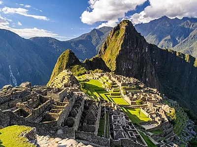

Somos un equipo diverso de expertos en viajes, desde aventureros
experimentados hasta entusiastas de la cultura. Compartimos una
profunda pasión por descubrir el mundo y creemos que cada viaje
es una oportunidad para aprender, conectar y crecer. Con años
de experiencia en la industria del turismo, estamos
comprometidos a brindarte un servicio personalizado y de
alta calidad.
Destinos Recomendados
Machu Picchu, Perú

Una antigua ciudad inca situada en los Andes, famosa por su arquitectura
impresionante y vistas espectaculares.
La Gran Muralla, China
Una de las maravillas del mundo, esta extensa muralla se extiende a lo largo
de miles de kilómetros y ofrece vistas panorámicas.
La Gran Muralla, China
Un conjunto de impresionantes cascadas rodeadas de exuberante selva tropical, consideradas una
de las maravillas naturales del mundo.
La Gran Muralla, China
Un icónico símbolo de París, ofrece vistas panorámicas de la ciudad
desde sus plataformas de observación.